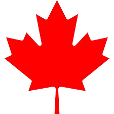

April 6, 1926: Started as Varney Air Lines by Walter Varney.
First Flight: Carried airmail between Pasco, Washington, and Elko, Nevada.
1931: Became United Airlines after merging with Boeing's transport division.
🏆 Key Milestones
1934: Forced to split from Boeing due to antitrust laws.
1961: Merged with Capital Airlines, becoming the world's largest airline at the time.
1985: Bought Pan Am's Pacific routes, launching its massive Asian network.
1997: Co-founded Star Alliance, the world's first global airline alliance.
2010: Merged with Continental Airlines to create a global aviation giant.
💡 Innovations
First Flight Nurse: Hired Ellen Church in 1930, creating the modern flight attendant profession.
Flight Kitchens: Introduced the first airline catering service in 1936.
Apollo System: Launched the first automated computerized flight reservation system in 1971.
Boeing 777: Worked directly with Boeing to design and launch the 777 aircraft in 1995.
✈️ Current Status
Mega Carrier: Operates as one of the "Big Three" US legacy airlines.
United Next: Executing a massive fleet overhaul with hundreds of new aircraft orders.
Global Hubs: Runs eight major hubs, including Chicago, San Francisco, and Newark.
Manila Service: Connects the Philippines directly to the US with non-stop flights from Manila (MNL) to San Francisco (SFO).
United Airlines - SSR
GCC Can Assist With
GCC Can Assist With
SSR Code
Description
BSCT
Bassinet request
BLND
Blind or low vision guest
CHLD
Travelling as a child
DEAF
Guest is deaf
FQTV
Frequent Flyer details
INF
Infant without seat
WCHC
Wheelchair assistance - immobile
WCHR
Wheelchair assistance - ramp
WCHS
Wheelchair assistance - stairs
Special Meal SSRs
SSR Code
Meal Type
Description
AVML
Asian Vegetarian
Vegetarian meal without meat, fish, or shellfish.
GFML
Gluten-Free
Meal without wheat, barley, rye, or oats.
KSML
Kosher
Prepared under Rabbinical supervision.
VGML
Vegan
No animal products or by-products.
Important Notes:
• Special meal requests must be submitted at least 24 hours before departure.
• SSR response codes:
✔ NN = Pending / Available
✔ UC = Not permitted
⚠ Do not add free text remarks in meal SSR requests.
Guests Must Contact United Airlines Directly For
SSR Code
Description
CBBG
Transporting musical instruments
EXST
Extra seat requests
INS
Infant with seat
UMNR
Unaccompanied Minor
Unborn Infants
Pregnancy related assistance
United Airlines - Routings & Networks
Australia ↔ USA Routes
Route
Frequency
Adelaide (ADL) – San Francisco (SFO)
3x weekly (from December 2025)
Brisbane (BNE) – San Francisco (SFO)
3x weekly
Melbourne (MEL) – San Francisco (SFO)
3x weekly
Melbourne (MEL) – Los Angeles (LAX)
Daily services
Sydney (SYD) – San Francisco (SFO)
Daily services
Sydney (SYD) – Los Angeles (LAX)
Daily services
Sydney (SYD) – Houston Intercontinental (IAH)
4x weekly
Important Notes:
• VA Codeshare flight numbers range from VA8000–VA8599.
• Guests travelling on SYD–SFO with through connections are not required to collect baggage in SFO.
• Velocity members can earn and redeem points across United Airlines worldwide network.
• Eligible members may receive:
✔ Priority check-in
✔ Priority boarding
✔ Lounge access
✔ Additional baggage allowance
United Airlines - Name Correction Policy
Important Rules
• All VA (795) ticket stock follows Virgin Australia name policy.
• Middle names are NOT required.
• Name changes are NOT permitted.
• Only eligible name corrections are allowed.
Allowed Name Corrections
Correction Type
Example
Incorrect spelling up to 3 characters
Samuelle Smyth → Samuel Smith
Change in salutation
Ms Mary Smith → Mrs Mary Smith
Double surname update
Mary Jane Ford Smith → Mary Jane Smith
Name sequence correction
Smith Samuel → Samuel Smith
Shortened version of name
Liz → Elizabeth
Formal legal name update
Updated based on identification
Marital status update
Surname changes after marriage
Gender status update
Passenger gender correction
Name Correction Procedure
Procedure
1. Retrieve the PNR.
2. Check availability of existing flights.
3. Create a new booking with corrected name.
4. Reassociate old ticket to new booking.
5. Process even exchange and reissue fee.
6. Contact United Airlines to verify corrected name.
7. Delete old itinerary and update remarks.
8. Resend updated itinerary.
Ways If Same Booking Class Is Unavailable
1. Seek assistance from Offshore Helpdesk and United Airlines 2. Contact Centre Leads to authorize or access the original booking class before processing the corrected booking.
Air Canada

🍁 Click me for 11 fun facts
Brief History
Special Service Requests (SSR)
Routings & Networks
Name Correction Policy
Air Canada - Brief History
🇨🇦 Flag Carrier & Largest Airline
Air Canada is the country's largest airline and its official flag carrier. Headquartered in Montreal, it provides scheduled passenger and cargo services to more than 195 destinations across six continents.
🌍 Network and Alliances
Star Alliance: Air Canada is a founding member of Star Alliance, which connects its network with major global airlines to provide a seamless travel experience worldwide.
Hubs: Its main Canadian hubs are Toronto Pearson (YYZ), Montreal-Trudeau (YUL), Vancouver International (YVR), and Calgary International (YYC).
Subsidiaries: The airline operates a leisure-focused subsidiary called Air Canada Rouge for select vacation and holiday routes.
✈️ Onboard Experience
Cabins: Depending on the route and aircraft, the airline offers Economy, Premium Economy, and Air Canada Signature Class (its premium international business class with lie-flat seats).
Amenities: It features in-flight entertainment in all cabins and provides in-seat Wi-Fi on its narrow-body and wide-body aircraft.
Awards: It is recognized as a Four-Star international network carrier and frequently wins awards as the Best Airline in North America.
📅 Historical Roots
Founded in 1937 as Trans-Canada Air Lines (TCA), renamed Air Canada in 1965. Privatized in 1989, the airline has grown into a global aviation leader with a strong focus on customer service and operational excellence.
Air Canada - SSR
GCC Can Assist With
SSR Code
Description
BSCT
Bassinet request
YPTA
Young Person Travelling Alone (12-17 years old)
BLND
Blind or low vision guest
CHLD
Travelling as a child
DEAF
Guest is deaf
FQTV
Frequent Flyer details
INF
Infant without seat
INS
Infant with seat
WCHC
Wheelchair assistance - completely immobile
WCHR
Wheelchair assistance - ramp
WCHS
Wheelchair assistance - stairs
Special Meal SSRs
SSR Code
Meal Type
AVML
Vegetarian Asian / Hindu Vegetarian Meal
BBML
Baby Meal
CHML
Child Meal
DBML
Diabetic Meal
GFML
Gluten Intolerant Meal
HNML
Hindu Meal (Non-Vegetarian)
KSML
Kosher Meal
LCML
Low-Calorie Meal
MOML
Muslim Meal
VJML
Vegetarian Jain Meal
VGML
Vegan Meal
VLML
Vegetarian Lacto-Ovo Meal
Important Notes:
• Meal requests are only available on Long Haul flights.
• Meal requests are NOT available on domestic connections.
• Guests must request meals at least 48 hours before departure.
• Guests must contact Virgin Australia to request special meals.
Guests Must Contact Air Canada Directly For
SSR Code
Description
CBBG
Transporting Cellos, Guitars or Saxophones
EXST
Extra Seat Requests
UMNR
Unaccompanied Minor
Air Canada - Routings & Networks
Australia ↔ Canada Routes
Route
Frequency
Brisbane (BNE) – Vancouver (YVR)
Daily services
Sydney (SYD) – Vancouver (YVR)
Daily services with additional seasonal frequencies
Domestic Canadian Connections
City
Airport Code
Calgary
YYC
Edmonton
YEG
Kelowna
YLW
Montreal
YUL
Ottawa
YOW
Toronto
YYZ
Winnipeg
YWG
Important Notes:
• Through check-in (IATCI) is available for combined VA and AC itineraries.
• Guests travelling to Canada require an eTA visa as Australian tourists.
• Secure Flight Data is mandatory before ticketing can be completed.
• Premium Economy upgrades are NOT permitted on codeshare partner flights.
Air Canada - Name Correction Policy
Important Rules
• All VA (795) ticket stock follows Virgin Australia name policy.
• Middle names are NOT required.
• Name changes are NOT permitted.
• Name corrections are NOT permitted in the same PNR.
• Agents must create a NEW PNR for corrections.
Allowed Name Corrections
Correction Type
Example
Incorrect spelling up to 3 characters
Samuelle Smyth → Samuel Smith
Change in salutation
Ms Mary Smith → Mrs Mary Smith
Shortened version of name
Liz → Elizabeth
Name sequence correction
Smith Samuel → Samuel Smith
Formal legal name update
Updated based on identification
Marital status update
Surname changes after marriage
Gender status update
Passenger gender correction
Name Correction Procedure
Procedure
1. Retrieve the booking PNR.
2. Verify if correction fits Air Canada rules.
3. Create a NEW PNR with corrected passenger details.
4. Existing PNR cannot be modified.
5. Apply applicable Name Correction Service Fee.
6. Rebook flights using same RBD if available.
7. Resend updated itinerary to guest.
If Same Booking Class Is Unavailable
Email airline.partnerships@virginaustralia.com and CC GCCChangeandComms@virginaustralia.com for assistance with unavailable RBD inventory before processing the new booking.
✈️ United & Air Canada Assistant
👋 Hello! Try these commands: 📌 uafunfacts → 11 United Airlines Fun Facts 📌 acfunfacts → 11 Air Canada Fun Facts 📌 10triviasua → 10 United Airline trivias 📌 10triviasac → 10 Air Canada trivias 📌 10triviasuava → United+Virgin Australia trivias 📌 10triviasacva → Air Canada+Virgin Australia trivias 📌 websiteua / websiteac → official websites 📌 aircraft → aircraft fleet links 📌 fare classes or fare brands Also ask about SSR, name policy, hubs, etc.